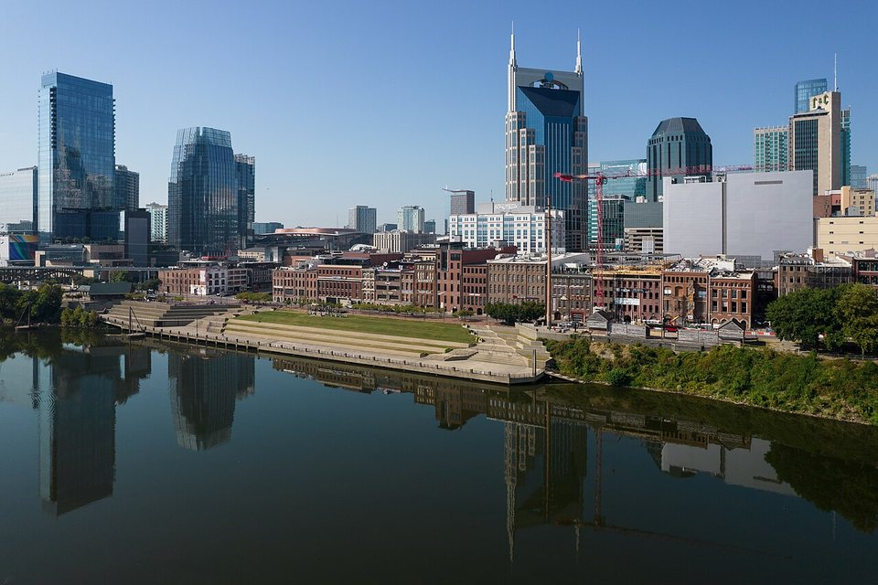

Historic grand hotel
The Hermitage Hotel
One of Nashville’s oldest and most beautiful hotels, with a grand lobby and old-school service. Walkable to the Ryman and downtown.
Official details for The Hermitage HotelFly in for the music. Stay for dinner.
The Ryman Auditorium, the Grand Ole Opry, honky-tonks on Broadway and one of the South’s most exciting restaurant scenes. John C. Tune Airport puts you about 15 minutes from downtown.

Time illustration: direct distance at 150 KTAS plus 15 minutes for departure and arrival, matching the discovery page. At about three hours from KMYR, consider a fuel stop and plan for winds aloft across the Appalachians. Use ForeFlight for your actual flight plan.
Check the weekend weather at both ends → Flight category, your minimums and the crosswind on the best runway.
More in Aviation & getting around below. Crew cars change often: call the FBO before you go. How to have a rental car waiting at the FBO · Know something we missed? Tell us.
KJWN, John C. Tune Airport, is Nashville’s general aviation reliever, west of downtown and far easier than the airline airport.
110 Tune Airport Drive, Nashville, TN 37209 · listed 24 hours
Full-service and self-serve 100LL and Jet A are listed. The control tower is listed as operating 7 AM–9 PM, so check procedures for late arrivals. Ask about facility fees, two-night parking and waivers with fuel. Atlantic Aviation won a bid to build a second FBO here; check whether it has opened. No live price is shown.
Nashville’s Class C airspace (BNA) sits to the southeast; review the sectional and arrival procedures.
Three different stays. Rates and availability need travel dates; book six to eight weeks ahead for weekends.
One of Nashville’s oldest and most beautiful hotels, with a grand lobby and old-school service. Walkable to the Ryman and downtown.
Official details for The Hermitage HotelConnected to the Country Music Hall of Fame, with the Mokara Spa and its couples treatments. Easy for a music-and-spa weekend.
Official details for Omni NashvilleA small inn in Germantown, the city’s most walkable neighborhood for dinner and a slow evening, away from the Broadway crowds.
Official details for Germantown InnA tower on the Cumberland River downtown with skyline views, a spa and polished service.
Official details for Four Seasons Hotel NashvilleA grand 1900 railway station turned hotel, with a vaulted lobby and stained glass. Walkable to The Gulch and downtown.
Official details for Union Station HotelA stylish hotel in The Gulch with a rooftop bar and strong restaurants downstairs.
Official details for Thompson NashvillePrices and availability for your dates, through our partner Stay22. This is an affiliate link: we may earn a commission at no cost to you. The picks above are never paid.
Nashville’s best reservations go fast. Book the special dinner as soon as you know your dates.
Barcelona-style tapas, paella and sangria at Fifth + Broadway, a short walk from the Ryman and the honky-tonks. Reservations and walk-ins; call 615-245-7160.
Official details for BoqueriaA small restaurant named among North America’s 50 Best and one of the city’s toughest reservations. Book the moment reservations open.
Official details for LocustSeasonal, pasta-focused cooking in a warm Germantown room. Swap it in for either night; The Optimist, a lively seafood restaurant, is another easy alternative.
Official details for Rolf & DaughtersChoose one big show and leave the rest of the music to chance.
The classic Nashville night: live bands from late morning to late night along Lower Broadway, no cover at most places. Hop between a few, then find a quieter listening room if you want to hear songwriters up close.
The “Mother Church of Country Music” and home of the Opry from 1943 to 1974. Take the daytime tour, with a 2026 Opry 100 exhibit, or see a concert or an “Opry at the Ryman” show at night.
Shows & toursThe live radio show at the Grand Ole Opry House, with several artists per night. Book tickets ahead and check whether your date is at the Opry House or the Ryman.
Downtown, beside the Omni. Allow a few hours even if you are not a country fan.
Historic brick streets, cafés and restaurants just north of downtown. The calm counterpoint to Broadway.
A hillside winery co-founded by Kix Brooks, about 25 miles south in the Williamson County countryside, named Southeast Winery of the Year for 2026. Bring a picnic; weekends from April to November add live music on the lawn. Taste on the non-flying day, and plan a driver.
Winery informationCouples massages, steam rooms and relaxation lounges downtown. A good Saturday-afternoon reset before a night out.
Booking: Ask about couples treatments, access for non-hotel guests, current pricing and cancellation policy. No prices are shown here, and no appointment has been booked.
Mokara Spa detailsMost of it is walkable from Broadway: boots, gig posters, records and Nashville-made goods.
The downtown shopping and dining block on Broadway, with apparel and lifestyle shops that lean toward Nashville brands, plus Boqueria for Friday dinner. Store lineups change, so check the directory.
Cowboy boots are the classic Nashville souvenir, and several boot stores line Lower Broadway, some with multi-pair deals. Try on plenty, and compare quality before you buy.
The legendary letterpress poster shop, with its store at the Country Music Hall of Fame. Pair it with your museum visit and bring home a gig poster.
A 1903 glass-roofed shopping arcade between Fourth and Fifth Avenues, home to small galleries and shops. A quiet browse a few blocks off Broadway.
Record lovers: Third Man Records, Jack White’s label and shop, is a short ride away near The Gulch.
The home of the Goo Goo Cluster, just south of Broadway on Third Avenue, with shop-only flavors and candy-making experiences.
Official details for Goo Goo Chocolate Co.Bean-to-bar Southern chocolate made in East Nashville; the factory at 1628 Fatherland Street offers tours and tastings. Try the brittle.
Official details for Olive & SinclairHours change with the season; check before you go. No paid placements.
This prototype links to current calendars. It does not yet match events to your travel dates.
Big names in an intimate, historic hall. Build the weekend around a show you love.
Ryman calendar for Concerts at the RymanNHL games at Bridgestone Arena, right on Broadway. A lively night out in season.
Major festivals and conventions fill hotels and raise prices. Check the city calendar before booking.
Check the destination calendar when choosing a weekend, and confirm dates and tickets with the organizer.
A sample Friday–Sunday weekend: the Ryman, a show, two standout dinners and a quiet Sunday. No bookings or availability confirmed.
At about three hours each way from KMYR, Nashville is a stretch for a day trip; it works better from closer airports.
Ryman Auditorium tour and lunch downtown.
Country Music Hall of Fame, then back to KJWN with daylight to spare.
Land at KJWN, subject to weather and your actual flight plan, and ride downtown.
Ryman Auditorium tour.
Dinner at Boqueria, then the honky-tonks on Lower Broadway.
Country Music Hall of Fame and Museum, with Hatch Show Print’s shop, then browse Fifth + Broadway and the boot shops.
Couples treatment at Mokara Spa, or rest before the evening.
Dinner at Locust, then the Grand Ole Opry or a Ryman concert.
A slow brunch and a stroll through Germantown.
Ride back to KJWN with ample time for aircraft preparation.
A long leg: plan fuel, weather and daylight carefully.
Brunch and a wander through The Gulch or 12 South.
A tour of a historic home or a distillery outside town (you’ll want a car).
A quieter listening room for songwriters, then dinner at The Optimist.
These details make the difference between an appealing list and a usable getaway.
Show tickets first, then hotel, Locust and the spa.
About three hours from KMYR. Consider a fuel stop and a backup day for weather.
Bachelorette parties and festivals make Broadway crowded. Germantown is the quieter base.
Hotel rates, show tickets and restaurant hours are date-dependent. No availability or live price is implied here.
Picks and links reviewed by WingAway Weekends. Hours, prices, menus and availability change often, so confirm directly with each place before booking. Spotted something out of date, or have a favorite we missed? Email us at hello@wingawayweekends.com.
WingAway Weekends helps you discover the destination. Use ForeFlight and current official aviation information for route, performance, weather, NOTAMs and preflight decisions. Flight planning and PIC responsibility stay with the pilot.